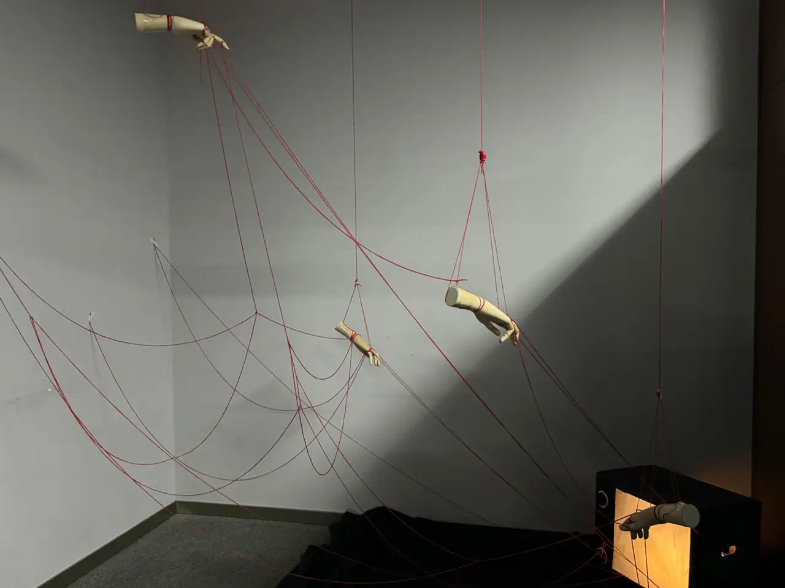

01A
Communication
I want to make work that helps people feel something. I enjoy seeing how light, colour and layout can change the way someone experiences a story.
For this portfolio, I developed a quieter direction inspired by Cecilia Shin’s theater and film portfolio: a dark background, warm neutral colours and clear space around the work.
LI YUWORK · PROCESS · ABOUT
Stories through
objects & space.
Graphic design, installation art and film.
A selection of ideas and experiments.

REVISED HOMEPAGE DIRECTION / 2026